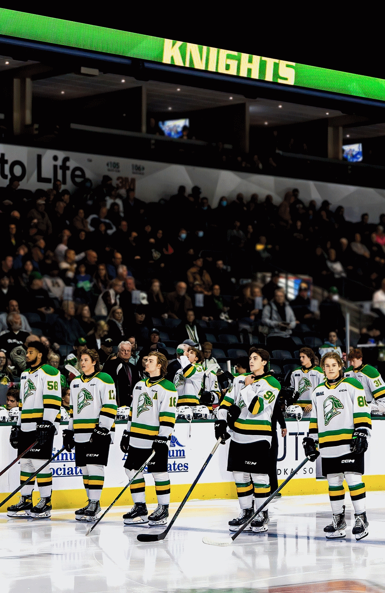

Welcome to this website about sports teams in Southern Ontario.
There are many different sports to play, watch, and enjoy around the world and several of them are played here in London and the surrounding area.
This website is designed to provide information about 3 of the most popular team-based sports that have teams in Southern Ontario. The sports included in this website are: hockey, basketball, and baseball.
If you have any questions, send us an email at info@ontariosports.ca